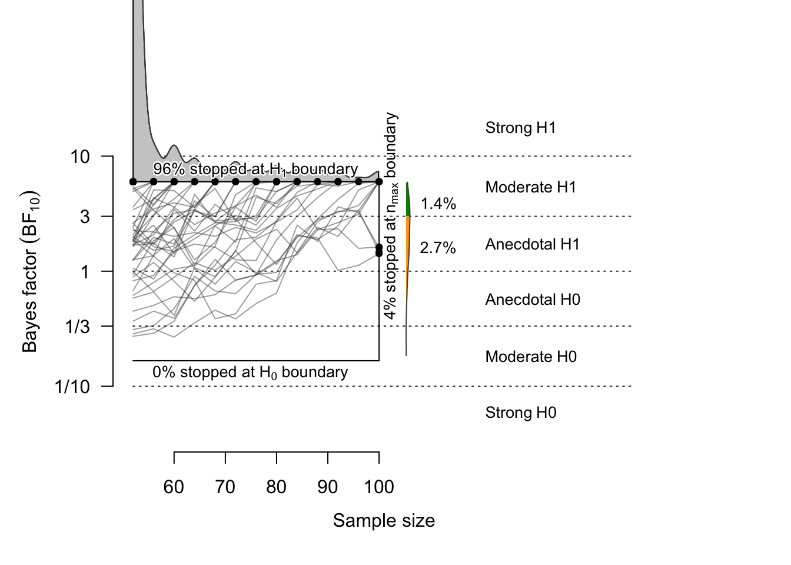
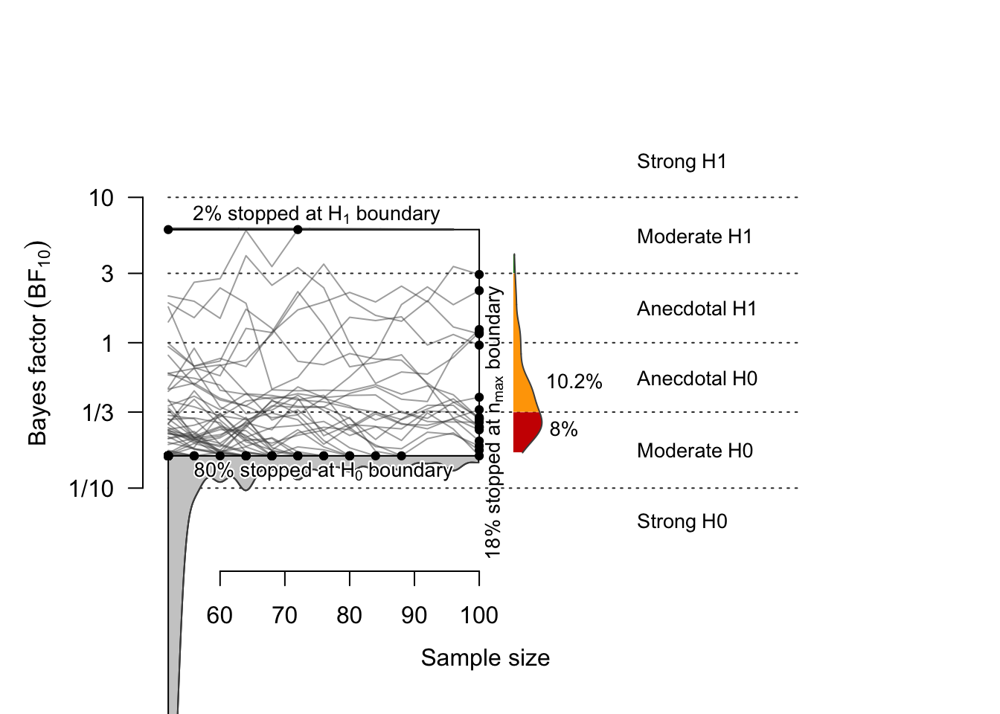

pacman::p_load(tidyverse, psych, knitr, rstatix, ggpubr)
pacman::p_load_gh("nicebread/BFDA", 'eddjberry/mixturer')
options(dplyr.summarise.inform=FALSE) # suppress warning in regards to regrouping We analyzed the data from Experiment 1–2, the low-load condition of Experiment 3, and the no-distraction condition of Experiment 4 from the open dataset provided by Yin and Chen (2024). Excluding the Stranger condition, we computed model-free precision for the Self and Friend conditions. Subsequently, paired-sample t-tests were conducted to compare the Self and Friend conditions in each experiment, and effect sizes were computed using Cohen’s d.
# As Yin and Chen measured memory for line orientations, memory errors should range [ –90°, 90°]. However, the code they shared transforms errors into a [–180°, 180°] range, likely due to the use of JV10_error.m by Paul Bays, which expects inputs within [–π, π]. To compensate for this, Yin and Chen converted degrees to radians using deg/90 × π instead of the conventional deg/180 × π. In other words, values that should have been scaled to [–π/2, π/2] were instead scaled to [–π, π], effectively doubling the error range before being passed into JV10_error.m. We followed the same approach in the present analysis.
deg2rad <- function(deg){deg * pi / 90} # originally 90 should be 180. see above.
wrap <- function(data, bound = pi) {
((data + bound) %% (bound * 2)) - bound
}
d1 <- read.csv('YinChen2024Memory/Results/E1results.csv', header = T) %>%
mutate(error = ifelse(Lshape==Label,
probeAngle - angle1,
probeAngle - angle2),
error = wrap(deg2rad(error)),
Label = factor(Label,
levels = c(1,2,3),
labels = c('Self', 'Friend', 'Stranger')),
id = subject + 100,
Expt = 1) %>%
select(Expt, id, Label, error)
# write.csv(d, file = "convertedE1to4.csv", row.names = FALSE)
headTail(d1)
## Expt id Label error
## 1 1 101 Friend -0.01
## 2 1 101 Self -0.09
## 3 1 101 Friend 0.33
## 4 1 101 Stranger 0.25
## ... ... ... <NA> ...
## 4533 1 127 Self -1.08
## 4534 1 127 Friend 0.52
## 4535 1 127 Stranger 0.06
## 4536 1 127 Self 0.16
d1 %>% group_by(id, Label) %>%
group_modify( ~ bays_2009_error(.$error)) %>%
ungroup() %>%
group_by(Label) %>%
get_summary_stats(precision, type="mean") # closely replicating Yin's
## # A tibble: 3 × 4
## Label variable n mean
## <fct> <fct> <dbl> <dbl>
## 1 Self precision 27 2.13
## 2 Friend precision 27 1.82
## 3 Stranger precision 27 1.76
d1 %>% group_by(id, Label) %>%
group_modify( ~ bays_2009_error(.$error)) %>%
ungroup() %>%
pairwise_t_test(precision ~ Label, paired = TRUE) # closely replicating Yin's
## # A tibble: 3 × 10
## .y. group1 group2 n1 n2 statistic df p p.adj p.adj.signif
## * <chr> <chr> <chr> <int> <int> <dbl> <dbl> <dbl> <dbl> <chr>
## 1 prec… Self Friend 27 27 3.01 26 0.006 0.012 *
## 2 prec… Self Stran… 27 27 3.60 26 0.001 0.004 **
## 3 prec… Friend Stran… 27 27 0.545 26 0.591 0.591 ns
d2 <- read.csv('YinChen2024Memory/Results/E2results.csv', header = T) %>%
mutate(error = ifelse(Lshape==Label,
probeAngle - angle1,
probeAngle - angle2),
error = wrap(deg2rad(error)),
Label = factor(Label,
levels = c(1,2,3),
labels = c('Self', 'Friend', 'Stranger')),
id = subject + 200,
Expt = 2) %>%
select(Expt, id, Label, error)
d3 <- read.csv('YinChen2024Memory/Results/E3results.csv', header = T) %>%
mutate(error = ifelse(Loc1==Label, probeAngle - angle1,
ifelse(Loc2==Label, probeAngle - angle2,
probeAngle - angle3)),
error = wrap(deg2rad(error)),
Label = factor(Label,
levels = c(1,2,3),
labels = c('Self', 'Friend', 'Stranger')),
absError = abs(error),
id = subject + 300,
Expt = 3) %>%
filter(ISI == 1.6) %>%
select(Expt, id, Label, error)
d4 <- read.csv('YinChen2024Memory/Results/E4results.csv', header = T) %>%
mutate(error = ifelse(loc1==Label,
probeAngle - angle1,
probeAngle - angle2),
error = wrap(deg2rad(error)),
Label = factor(Label,
levels = c(1,2,3),
labels = c('Self', 'Friend', 'Stranger')),
absError = abs(error),
id = subject + 400,
Expt = 4) %>%
filter(suffix == 5) %>%
select(Expt, id, Label, error)
d <- bind_rows(list(d1, d2, d3, d4)) %>%
mutate(Expt = factor(Expt)) %>%
filter(Label != 'Stranger') %>%
droplevels()
headTail(d)
## Expt id Label error
## 1 1 101 Friend -0.01
## 2 1 101 Self -0.09
## 3 1 101 Friend 0.33
## 4 1 101 Self 0.09
## ... <NA> ... <NA> ...
## 11577 4 428 Self -0.03
## 11578 4 428 Friend 0.15
## 11579 4 428 Friend -0.41
## 11580 4 428 Self -0.42
table(d$Label, d$id)
##
## 101 102 103 104 105 106 107 108 109 110 111 112 113 114 115 116
## Self 56 56 56 56 56 56 56 56 56 56 56 56 56 56 56 56
## Friend 56 56 56 56 56 56 56 56 56 56 56 56 56 56 56 56
##
## 117 118 119 120 121 122 123 124 125 126 127 201 202 203 204 205
## Self 56 56 56 56 56 56 56 56 56 56 56 96 96 96 96 96
## Friend 56 56 56 56 56 56 56 56 56 56 56 96 96 96 96 96
##
## 206 207 208 209 210 211 212 213 214 215 216 217 218 219 220 221
## Self 96 96 96 96 96 96 96 96 96 96 96 96 96 96 96 96
## Friend 96 96 96 96 96 96 96 96 96 96 96 96 96 96 96 96
##
## 222 223 224 225 227 228 229 301 302 303 304 305 306 307 308 309
## Self 96 96 96 96 96 96 96 30 30 30 30 30 30 30 30 30
## Friend 96 96 96 96 96 96 96 30 30 30 30 30 30 30 30 30
##
## 310 311 312 313 314 315 316 317 318 319 320 321 322 323 324 325
## Self 30 30 30 30 30 30 30 30 30 30 30 30 30 30 30 30
## Friend 30 30 30 30 30 30 30 30 30 30 30 30 30 30 30 30
##
## 401 402 403 404 405 406 407 408 409 410 411 412 413 414 415 416
## Self 30 30 30 30 30 30 30 30 30 30 30 30 30 30 30 30
## Friend 30 30 30 30 30 30 30 30 30 30 30 30 30 30 30 30
##
## 417 418 419 420 421 422 423 424 425 426 427 428
## Self 30 30 30 30 30 30 30 30 30 30 30 30
## Friend 30 30 30 30 30 30 30 30 30 30 30 30
# hist(d$error, xlab = "Memory error", main = "Error distribution")
range(d$error) # Memory errors were distributed within the range of [–π, π].
## [1] -3.103032 3.113949
dd <- d %>%
group_by(id, Label) %>%
group_modify( ~ bays_2009_error(.$error)) %>%
ungroup() %>%
mutate(Expt = round(id/100),
Precision = precision) %>%
select(Expt, id, Label, Precision)
tb.t <- dd %>%
group_by(Expt) %>%
pairwise_t_test(
Precision ~ Label, paired = TRUE,
ref.group = "Self",
p.adjust.method = "none"
) %>%
mutate(signif = p.adj.signif) %>%
select(-c(p.adj, p.adj.signif))
tb.d <- dd %>%
group_by(Expt) %>%
cohens_d(Precision ~ Label, paired = TRUE, ref.group = "Self") %>%
select(effsize, magnitude)
cbind(tb.t, tb.d) %>%
kable(digits = 4, format = "simple", caption = "Pairwise t-test")| Expt | .y. | group1 | group2 | n1 | n2 | statistic | df | p | signif | effsize | magnitude |
|---|---|---|---|---|---|---|---|---|---|---|---|
| 1 | Precision | Self | Friend | 27 | 27 | 3.0096 | 26 | 0.006 | ** | 0.5792 | moderate |
| 2 | Precision | Self | Friend | 28 | 28 | 2.7750 | 27 | 0.010 | ** | 0.5244 | moderate |
| 3 | Precision | Self | Friend | 25 | 25 | 2.9172 | 24 | 0.008 | ** | 0.5834 | moderate |
| 4 | Precision | Self | Friend | 28 | 28 | 2.1960 | 27 | 0.037 | * | 0.4150 | small |
Among the experiments, Experiment 4 yielded the smallest effect size (Cohen’s d = 0.415). To conservatively estimate the required sample size, we adopted Cohen’s d = 0.41 for the power analysis.
Guided by a sequential Bayes factor design analysis (sBFDA) with predefined minimum and maximum limits, the sample size will be determined, and subjects will be recruited accordingly.
In an SBF design, the Bayes factor (BF) is computed each time new data are added. If the BF exceeds a predefined threshold, data collection is terminated; otherwise, additional subjects are recruited (i.e., optional stopping). Compared to fixed-N designs, SBF designs typically require fewer subjects on average, offering more efficient use of resources such as time and funding (Schönbrodt et al., 2017).
To avoid erroneous rejection of a true \(H_1\) or erroneous acceptance of a false \(H_0\), which are more likely with small samples, it is recommended to set a minimum sample size. In this study, the first BF calculation will be conducted when 52 subjects have been collected (\(N_{min}=52\)), which corresponds to approximately twice the sample sizes reported in Yin and Chen (2024; N = 25~28).
Due to counterbalancing requirements (e.g., color and response key assignments), subjects will be recruited in multiples of four. Thus, BF will be updated after every additional group of four subjects beyond the minimum sample size.
The decision threshold for the BF is set at 6 (Schönbrodt & Wagenmakers, 2018). Data collection will stop when \(BF_{10} > 6\) or \(BF_{01} > 6\) (i.e., when \(BF_{10} < 1/6\)).
“For the following analyses, we will choose a relatively small symmetric decision boundary of 6, classified as “moderate evidence” by Lee and Wagenmakers (2014), assuming that it represents a reasonable starting point for a good trade-off between efficiency and informativeness.”
If the BF does not reach the decision threshold, data collection will continue until a maximum of 100 subjects is reached (\(N_{max}=100\)).
To estimate the statistical properties of the design, a BFDA was conducted. To take a conservative approach to sample size estimation, we set the minimum expected effect size to d = 0.41, corresponding to the smallest observed effect in Experiment 4 of Yin and Chen (2024).
The default prior used in both JASP and the BayesFactor R package (i.e., objective prior, which is a zero-centered Cauchy prior with a scale of 0.707) was employed as both the design prior and the analysis prior in BFDA. Although this default prior yields a higher false negative rate for true \(H_1\) than an informed prior (or subjective prior) when the effect size is d = 0.41, it results in a lower false positive rate for false \(H_0\) (Stefan et al., 2019).
pList <- list("Cauchy",list(prior.location=0, prior.scale=sqrt(2)/2)) # default prior
# pList <- list("t", list(prior.location=0.35, prior.scale=0.102, prior.df=3)) # informed prior
nMin <- 52
nMax <- 100
nB <- 1000
nStep <- 4
sim41.H1 <- BFDA.sim(expected.ES=0.41, type="t.paired", design="sequential", prior=pList,
n.min=nMin, n.max=nMax, stepsize = nStep, alternative="greater",
boundary=Inf, B=nB, cores=4, verbose=TRUE)
sim.H0 <- BFDA.sim(expected.ES=0, type="t.paired", design="sequential", prior=pList,
n.min=nMin, n.max=nMax, stepsize = nStep, alternative="greater",
boundary=Inf, B=nB, cores=4, verbose=TRUE)## outcome percentage
## 1 Studies terminating at n.max (n=100) 4.2%
## 2 Studies terminating at a boundary 95.8%
## 3 --> Terminating at H1 boundary 95.7%
## 4 --> Terminating at H0 boundary 0.1%
##
## Of 4.2% of studies terminating at n.max (n=100):
## 1.4% showed evidence for H1 (BF > 3)
## 2.7% were inconclusive (3 > BF > 1/3)
## 0.1% showed evidence for H0 (BF < 1/3)
##
## Average sample number (ASN) at stopping point (both boundary hits and n.max): n = 60
##
## Sample number quantiles (50/80/90/95%) at stopping point:
## 50% 80% 90% 95%
## 52 68 84 100When the effect size is Cohen’s d = 0.41, the probability that \(BF > 6\) (i.e., statistical power) is 95.7%, and the probability that \(BF < 1/6\) (false negative rate) is 0.1%. The probability that the BF does not exceed the threshold is 4.2%; among these, 1.4% had \(BF > 3\).
In 1,000 simulations, the average sample size when the experiment stopped was 60 subjects. In 80% of the simulated samples, the threshold (6 or 1/6) was reached when the sample size was 68 or fewer.
# ceiling(quantile(h1$endpoint.n, prob=.80)) # = 68
plot(sim41.H1, n.min=52, n.max=100, boundary=c(1/6, 6), n.trajectories = 100)
## outcome percentage
## 1 Studies terminating at n.max (n=100) 18.4%
## 2 Studies terminating at a boundary 81.6%
## 3 --> Terminating at H1 boundary 1.8%
## 4 --> Terminating at H0 boundary 79.8%
##
## Of 18.4% of studies terminating at n.max (n=100):
## 0.2% showed evidence for H1 (BF > 3)
## 10.2% were inconclusive (3 > BF > 1/3)
## 8% showed evidence for H0 (BF < 1/3)
##
## Average sample number (ASN) at stopping point (both boundary hits and n.max): n = 67
##
## Sample number quantiles (50/80/90/95%) at stopping point:
## 50% 80% 90% 95%
## 52 96 100 100When the effect size is zero (i.e., under the null), the probability that \(BF < 1/6\) is 79.8%, and the probability that \(BF > 6\) (false positive rate) is 1.8%. The probability that the BF does not exceed the threshold is 18.4%, and among these, 8% had \(BF < 1/3\).
In 1,000 simulations, the average sample size at the stopping point was 67 subjects In 80% of the simulated samples, the threshold (6 or 1/6) was reached when the sample size was 96 or fewer.
# ceiling(quantile(h0$endpoint.n, prob=.80)) # = 96
plot(sim.H0, n.min=52, n.max=100, boundary=c(1/6, 6), n.trajectories = 100)
sessionInfo()
## R version 4.5.1 (2025-06-13)
## Platform: aarch64-apple-darwin20
## Running under: macOS Sequoia 15.6.1
##
## Matrix products: default
## BLAS: /System/Library/Frameworks/Accelerate.framework/Versions/A/Frameworks/vecLib.framework/Versions/A/libBLAS.dylib
## LAPACK: /Library/Frameworks/R.framework/Versions/4.5-arm64/Resources/lib/libRlapack.dylib; LAPACK version 3.12.1
##
## locale:
## [1] en_US.UTF-8/en_US.UTF-8/en_US.UTF-8/C/en_US.UTF-8/en_US.UTF-8
##
## time zone: Asia/Seoul
## tzcode source: internal
##
## attached base packages:
## [1] parallel stats graphics grDevices utils datasets methods
## [8] base
##
## other attached packages:
## [1] BFDA_0.5.1 doParallel_1.0.17 iterators_1.0.14
## [4] foreach_1.5.2 mixturer_0.1.0 klippy_0.0.0.9500
## [7] patchwork_1.3.2 cowplot_1.2.0 see_0.12.0
## [10] ggpubr_0.6.1 Superpower_0.2.4.1 BayesFactor_0.9.12-4.7
## [13] Matrix_1.7-4 coda_0.19-4.1 rstatix_0.7.2
## [16] knitr_1.50 psych_2.5.6 lubridate_1.9.4
## [19] forcats_1.0.0 stringr_1.5.2 dplyr_1.1.4
## [22] purrr_1.1.0 readr_2.1.5 tidyr_1.3.1
## [25] tibble_3.3.0 ggplot2_4.0.0 tidyverse_2.0.0
##
## loaded via a namespace (and not attached):
## [1] RColorBrewer_1.1-3 Rmisc_1.5.1 rstudioapi_0.17.1
## [4] jsonlite_2.0.0 datawizard_1.2.0 magrittr_2.0.4
## [7] estimability_1.5.1 magick_2.9.0 farver_2.1.2
## [10] nloptr_2.2.1 rmarkdown_2.29 contfrac_1.1-12
## [13] vctrs_0.6.5 minqa_1.2.8 htmltools_0.5.8.1
## [16] plotrix_3.8-4 truncnorm_1.0-9 broom_1.0.10
## [19] deSolve_1.40 Formula_1.2-5 sass_0.4.10
## [22] hypergeo_1.2-14 bslib_0.9.0 plyr_1.8.9
## [25] emmeans_1.11.2-8 cachem_1.1.0 sfsmisc_1.1-22
## [28] elliptic_1.4-0 mime_0.13 lifecycle_1.0.4
## [31] pkgconfig_2.0.3 R6_2.6.1 fastmap_1.2.0
## [34] rbibutils_2.3 shiny_1.11.1 digest_0.6.37
## [37] numDeriv_2016.8-1.1 qgam_2.0.0 labeling_0.4.3
## [40] timechange_0.3.0 abind_1.4-8 mgcv_1.9-3
## [43] compiler_4.5.1 rngtools_1.5.2 withr_3.0.2
## [46] S7_0.2.0 backports_1.5.0 carData_3.0-5
## [49] ggsignif_0.6.4 MASS_7.3-65 caTools_1.18.3
## [52] tools_4.5.1 httpuv_1.6.16 TeachingDemos_2.13
## [55] glue_1.8.0 abtest_1.0.1 nlme_3.1-168
## [58] tufte_0.14.0 promises_1.3.3 grid_4.5.1
## [61] reshape2_1.4.4 generics_0.1.4 gtable_0.3.6
## [64] tzdb_0.5.0 hms_1.1.3 car_3.1-3
## [67] utf8_1.2.6 pillar_1.11.0 later_1.4.4
## [70] splines_4.5.1 lattice_0.22-7 tidyselect_1.2.1
## [73] pbapply_1.7-4 reformulas_0.4.1 gridExtra_2.3
## [76] xfun_0.53 stringi_1.8.7 yaml_2.3.10
## [79] pacman_0.5.1 boot_1.3-32 evaluate_1.0.5
## [82] codetools_0.2-20 cli_3.6.5 xtable_1.8-4
## [85] Rdpack_2.6.4 jquerylib_0.1.4 afex_1.5-0
## [88] Rcpp_1.1.0 MatrixModels_0.5-4 assertthat_0.2.1
## [91] bayestestR_0.17.0 doRNG_1.8.6.2 bitops_1.0-9
## [94] lme4_1.1-37 viridisLite_0.4.2 mvtnorm_1.3-3
## [97] lmerTest_3.1-3 scales_1.4.0 insight_1.4.2
## [100] crayon_1.5.3 rlang_1.1.6 mnormt_2.1.1Copyright © 2025 CogNIPS. All rights reserved.